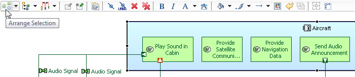

The top area of all Sirius diagram editors is filled with the tab-bar, which provides access to many operations on diagrams and their elements such as "automatic layout tool, selection tool, Show/Hide tool...". The content of the tab-bar differs when the current selection is the diagram itself (i.e. no element is selected) or one or several diagram elements.

This document describes some of these operations.
| Tab-bar Actions Available on Diagram | Tab-bar Actions Available on Diagram Elements |
|---|---|
|
|